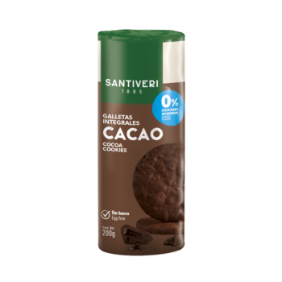
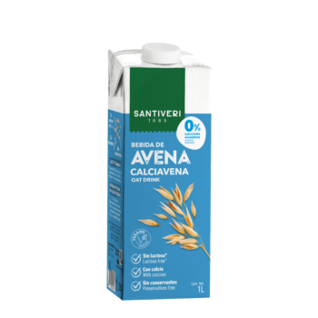

Galletas de Avena Bio
Contenido real: Elaboradas con ingredientes 100% ecológicos, sin azúcares refinados y ricas en fibra natural. El aliado perfecto para tus desayunos saludables.

Contenido real: Elaboradas con ingredientes 100% ecológicos, sin azúcares refinados y ricas en fibra natural. El aliado perfecto para tus desayunos saludables.
| Nutriente | Cantidad |
|---|---|
| Valor energético | 1950 kJ / 465 kcal |
| Grasas (saturadas) | 18 g (2.5 g) |
| Hidratos de carbono | 65 g |
| Proteínas | 7.5 g |
| Fibra alimentaria | 6.0 g |

Sabor natural y ligero.